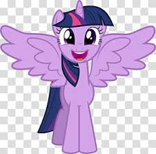
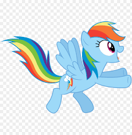

Postacie

Twilight Sparkle
Twilight Sparkle jest główną bohaterką serii. Jest inteligentną i pracowitą uczennicą księżniczki Celestii.

Rainbow Dash
Rainbow Dash jest odważnym i lojalnym kucykiem, który marzy o dołączeniu do Wonderbolts.